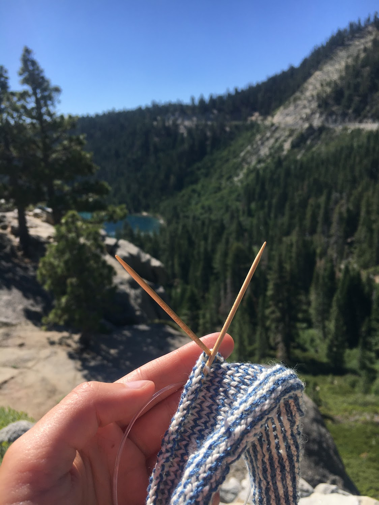
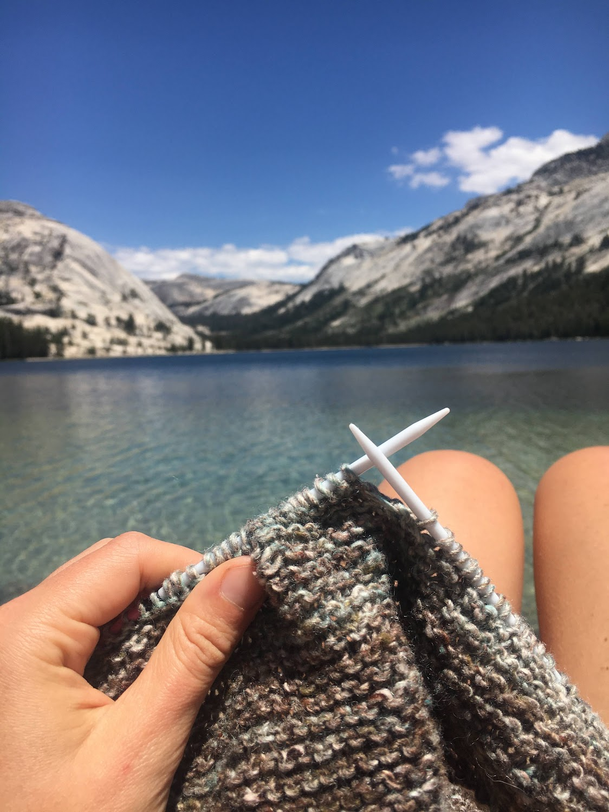
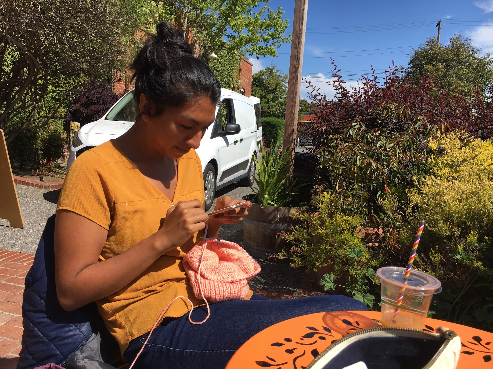

Click through the tabs below to see and read about some of the places I’ve knit. Something special about slow fashion for me is that every time I wear things I make, I am reminded of all the places my garment is connected to: the locations where the yarn was grown, spun, and dyed; the local yarn shop where I purchased my supplies; the places where I sat and worked on my project peacefully. I’m glad this website gives me the space to expand about some of the details that make my knits special and memorable to me.

My partner, Shane, and I enjoy cycling (and sometimes bike packing) and planned a 2-day trip around Lake Tahoe back in 2019. Shane had some unfortunate bike repair problems that stopped our trip short. This was possibly for the best, since some of the roads around the lake really are sketchy for cyclists.
Shane biked back to the car on my bike (hilarious size mismatch!) while I sat with his broken bike at Emerald Bay, waiting for him to pick me up in the car. Fortunately, I had packed my knitting for the trip and got some rows in! Silver linings!

I’ve also done my fair share of knitting in Yosemite National Park. I love visiting in winter when the crowds are scarce and I can actually wear my knits, but I equally enjoy sitting by the water in summer and having a backcountry crafternoon.
Here, I am working on the Purl Soho Dovetail Scarf, which has become a staple in my wardrobe. The yarn was purchased at my favorite yarn store on the planet: Atelier in Truckee, California!

I also love knitting at cafes. And breweries. For a while, I met with my friend, Becca, shown in this tab, at cafes and parks to knit socially and enjoy conversation, fresh air, caffeine, and soft yarn!